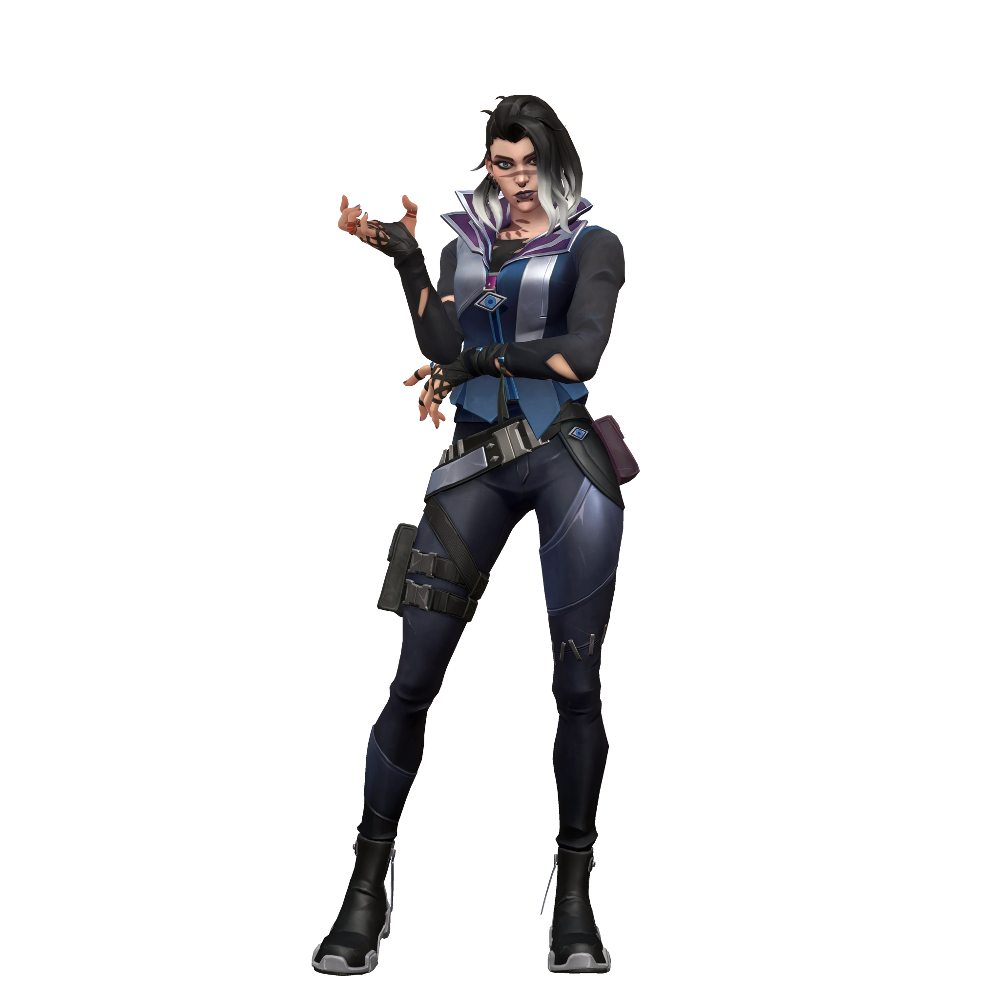

Fade

ÖZEL YETENEKLERİ
| Yetenek | Görsel | Açıklama |
|---|---|---|
| Q - MIHLA |  |
Kâbus mürekkebinden küre kuşan. Küreyi fırlatmak için ATEŞ ET. Küre belli bir süre sonra yere çarpar. Mürekkep küresi yere çarptıktan sonra patlar ve düşmanların içinden normal yollarla çıkamayacağı bir bölge oluşturur. Uçuşu sırasında küreyi yere erken indirmek için yeteneği TEKRAR KULLAN. |
| E - MUSALLAT |  |
Kâbuslardan fırlamış bir varlık kuşan. Küreyi fırlatmak için ATEŞ ET. Küre belli bir süre sonra yere çarpar. Yere çarpan küre, kâbuslardan fırlamış bir varlığa dönüşür ve bu varlık, görüş alanı içinde kalan düşmanların yerini açığa çıkarır. Düşmanlar bu varlığı yok edebilir. Uçuşu sırasında küreyi yere erken indirmek için yeteneği TEKRAR KULLAN. |
| C - ECEL |  |
Bir Ecel KUŞAN. Ecel’i düz bir hatta ileriye yollamak için ATEŞ ET. Ecel, koni şeklindeki görüş alanında bulunan herhangi bir düşmana veya düşmanın bıraktığı ize kilitlenip hedefinin peşine takılır ve yakalarsa hedefin görüşünü kısıtlar. Ecel’i nişangâhının baktığı yöne doğru ilerletmek için ATEŞ ETME Düğmesi'ni BASILI TUT. |
| X - GECE KARANLIĞI |  |
Korkunun gücünü KUŞAN. Duvarların içinden geçebilen bir kâbus enerjisi göndermek için ATEŞ ET. Bu enerji rakibe doğru giden bir iz oluşturmanın yanında rakibi sağır eder ve çürüme uygular. |